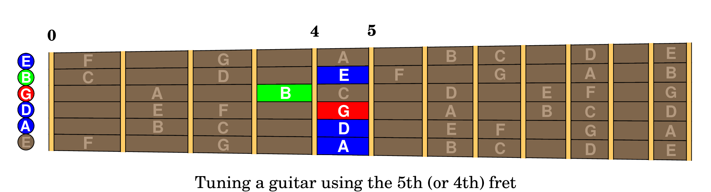
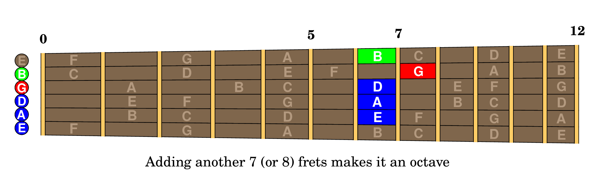
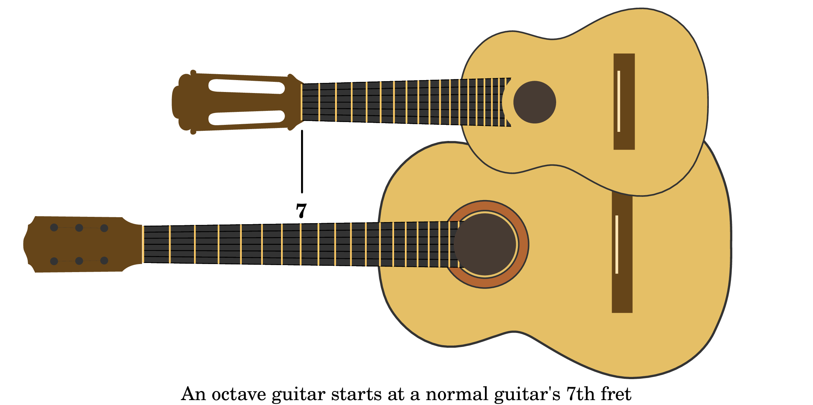
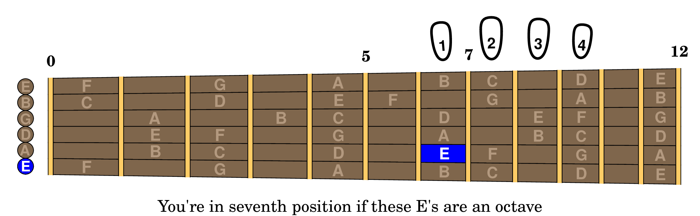

Lurking inside every guitar there is a smaller guitar (minus a string) tuned an octave higher, and you'll remember this story every time you go to seventh position, and that means for every exercise in this book.
The first guitar I made, at age 15, was a miniature classical guitar tuned an octave higher than a standard guitar. Small suited the situation: I had to make it in my bedroom with simple hand tools I had for model airplanes. And small also made it unique; you couldn't buy one of these in a store, nor could you see one in a museum, much less find design drawings. This was back in the 1960s, decades before the internet, so I was on my own.
But there was one major problem. While I could do all the woodworking, there was no way I was going to make custom strings. It wasn't like now, where manufacturers offer strings in a continuum of gauges. And since strings wear out, replacing them with new ones was going to be a recurring problem. Ideally I'd like to use strings I could buy at my local music store.
Was there a way to use regular guitar strings in my little guitar? Obviously a standard guitar can play an octave higher by going to the 12th fret, but that would make for a tiny half-sized instrument with disproportionately thick strings that would be difficult to play and lead to intonation issues.
A better way to play an octave higher on standard guitar strings is to go to the seventh (or eighth) fret on the neighboring string.
Back in those days, well before clip-on electronic tuners, everybody tuned one string against its lower neighbor, going up 5 frets on the lower string (or up 4 frets on the G string) like this:
You knew going up 5 (or 4) frets got you to the next string. But to get an octave you'd need to go up 12 frets. Well, back then everybody also knew that 5 + 7 (or 4 + 8) equaled 12, so going up an additional 7 (or 8) frets was an obvious way to play an octave above the open lower string, like this:
That meant I could buy a set of standard classical guitar strings, discard the lowest string and get my high E string from a tenor ukulele. It would all work if the scale length on my little guitar matched about the seventh fret on a standard guitar, like this:
The point of telling you this true story about my little octave guitar is to plant these images permanently into your brain. Forevermore you will know that there is an octave guitar on your own fretboard if you just move over one string. The next section shows how to make that knowledge useful.
Knowing the octave story will let you find seventh position by ear. Put your hand where you guess seventh position is and fret the fifth string with your first finger. If you guessed right, the sound will be exactly an octave above the open E string. If you're wrong, move up or down until it's in tune.
You're going to be doing this a lot, and your guesses can actually improve, thanks to special neurons in your muscles and joints that allow you to sense roughly where your hand is located. It's called “proprioception”, if you want to read about it in Wikipedia.
And the point of this section is that you shouldn't look at your hand on the fretboard to find seventh position. Instead, you should feel the fifth string and listen to the result to verify that you're in seventh position. All while keeping your eyes on the music.
Remember, \bold your own octave guitar is in seventh position to help you.